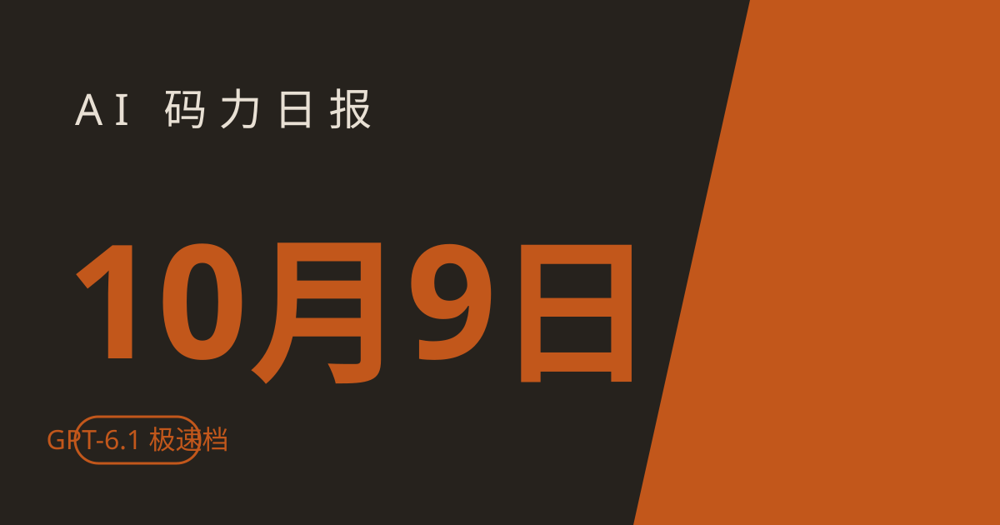

AI 码力日报 · 2026年10月9日

⚡ 一句话速览
- OpenAI 上线 GPT-6.1 Sol Ultrafast：最快 API 档，API 最高 6 倍生成速度、Codex 中 8 倍，定价 $12/$60 是标准档的 6 倍，已在 API、Codex 和 ChatGPT Work 灰度铺开。
- Anthropic 发 Claude Dashboards + Claude Motion：自然语言连数据平台生成实时仪表盘（beta，付费档），可编辑动画导出视频（beta，Team/Enterprise），Docs/Slides/Design 全量开放。
- Google 推"通用工作 agent"：横跨 Gmail/Drive/Docs/Sheets/Chat/Calendar，一个目标丢进去能跑数小时甚至数天的任务，自动选模型、内置成本控制。
- Docker 官方开源 docker-agent：YAML 声明式定义 agent 团队，
docker agent run即跑，HN 上 290 points / 133 评论，Docker 生态的 agent 框架有了官方答案。
🤖 今日 AI Coding 动态
Anthropic 发 Claude Dashboards + Claude Motion：Dashboards 连数据做实时仪表盘，Motion 做动画
10 月 8 日，Anthropic 连续两弹。Claude Dashboards（beta，付费档）：连商业数据平台，用自然语言生成实时仪表盘；Claude Motion（beta，Team/Enterprise）：可做可编辑的动画并导出视频；同时 Docs、Slides、Design 三个创作工具结束 beta 全量开放。Reuters 独家报道，影响所有付费 Claude 用户的工作流——从"问答助手"往"产出成品件"又走了一步。Reuters（链接截至撰写时可访问）
我的看法：Dashboards 的野心不小——直接插数据仓库、输出可交互仪表盘，这是要吃 BI 工具的饭。Motion 做动画导出视频对做产品演示、课程内容的人是福音。不过都还在 beta，实际效果等 GA 再看。
顺带一条有意思的：Anthropic 更新使用政策，禁止"无故虐待"Claude——仅针对极端反复虐待行为（不含普通抱怨、创意写作、测试），Claude 可主动终止该对话，主要执法手段仍是结束对话而非封号。MacRumors（链接截至撰写时可访问）
OpenAI 上线 GPT-6.1 Sol Ultrafast：最快档，价格是标准档 6 倍
约 10 月 8 日，OpenAI 首发给 @OpenAIDevs。API 定价 $12/百万输入、$60/百万输出（标准档 $2/$10 的 6 倍），宣称 API 侧最高 6 倍 token 生成速度、在 Codex 中达 8 倍。已在 API、Codex 和 ChatGPT Work 灰度铺开，目标场景是代理式和交互式工作负载。runtimewire（链接截至撰写时可访问）
我的看法：这就是"花钱买速度"档——latency 敏感的 agent 循环、实时交互场景愿意付溢价；普通批量任务用标准档就行。做成本核算的人注意：模型选型表要加一列"速度档"了。
Google 推"通用工作 agent"：跨 Gmail/Drive/Docs/Sheets/Chat/Calendar，给目标不给指令
10 月 8 日，Google Cloud "Gemini at Work 2026" 活动上官宣。定位是 "single, universal agent for work"：给它一个目标而不是一串指令，它能跨 Gmail、Docs、Sheets、Calendar 等多个应用跑数小时甚至数天的任务（写代码、做模型、协调会议），自动选模型、内置成本控制。unite.ai / analyticsinsight（链接截至撰写时可访问）
我的看法：Google 的护城河就是自家全家桶数据——agent 能原生跨 Workspace 应用，这是第三方 agent 框架很难复制的。企业开发者可以关注下权限和审计怎么设计，"跑好几天的任务"最先卡的就是权限边界。
Cursor iOS app：出门也能盯着本地 agents 跑
10 月 6 日 changelog。Cursor iOS app 现在能显示本机跑的 local agents 并发消息——agent 仍在本机跑（电脑要保持在线、开"Keep this computer awake"），手机只是远程看板 + 对讲机。默认对所有非 Enterprise 组织开启。changelog（链接截至撰写时可访问）
我的看法：长任务最怕的就是"不知道它跑哪了"——手机上瞥一眼进度、有问题回一条消息，这个场景是真实痛点。不过出门前别忘了保持电脑在线，不然回来看到 agent 早停了。
另外提一句：Claude Code 10 月 7–8 日三连发（2.1.293/294/295）——2.1.293 起默认模型切到 Claude Haiku 5.5（1M 上下文、更快更便宜），2.1.294 修复指令型 hook 解析、2.1.295 让 hook 失败可阻断动作。更新工具链顺手升一下。changelog（链接截至撰写时可访问）
🐑 今日羊毛
OpenAI 给 Pro 降级用户自动到账 62,500 credits（约 $2,500）
一句话：10 月初 OpenAI 改版 Pro 方案（Pro $200/月月费不变、额度减半）后，给受降级影响的现有 Pro 用户账户里自动打了 62,500 usage credits，官方口径价值约 $2,500。
- 怎么薅：无手动领取入口——符合条件的自动到账。登录 ChatGPT → 检查账户 credits 余额确认
- 有效期：2026 年底前用完
- 适合谁：仅限受降级影响的现有 Pro 用户；新用户没有；大陆用户基本用不上 ChatGPT 付费，这条看看就行。makeuseof 报道（截至撰写时活动有效）
Google AI Pro / AI Plus：在校大学生 1 年免费（12 月 31 日前领）
一句话：Google 官方学生计划——18 岁以上在校大学生，Google AI Pro（美国）或 Google AI Plus（美国以外 140+ 市场）免费用 12 个月。
- 怎么薅：访问 gemini.google/students/ → Claim Free Student Plan → 学校邮箱验证（美国需 SheerID）+ 绑定付款方式 → 开通。⚠️ 付款方式到期会自动转付费，用完记得取消
- 有效期：2026 年 12 月 31 日前领取
- 适合谁：在校大学生；中国大陆是否在支持市场内不确定，务必自己去官网验证。价值约 $239.88（AI Pro）/ $59.88（AI Plus）。Google 官方公告（截至撰写时活动有效）
Vercel AI Gateway：每 30 天 $5 免费 credits（常驻）
一句话：Vercel AI Gateway 给每个账号每 30 天刷新 $5 免费额度，无需信用卡，OpenAI 兼容接口可调 100+ 模型。
- 怎么薅：注册 Vercel 账号 → 进入 dashboard 的 AI Gateway → 生成 API Key → 按 OpenAI 兼容接口调用。另有一批明确标 $0 的免费模型
- 有效期：常驻，按 30 天周期刷新
- 适合谁：想薅 API 做实验的开发者。资源清单 / Vercel AI Gateway（截至撰写时有效）
OpenRouter 免费档：25+ 免费模型每天 50 次（常驻）
一句话：OpenRouter 的 :free 模型免费档每天 50 次请求，注册即用；一次性充值 $10 后涨到 1000 次/天。
- 怎么薅：OpenRouter 官网注册 → 直接调
:free模型（如 minimax-m3:free 等） - 有效期：常驻（目录偶尔变动）
- 适合谁：想零成本白嫖模型做测试的开发者。免费 API 清单（截至撰写时有效）
⭐ 今日 GitHub 热门项目
anthropics/knowledge-work-plugins
Anthropic 官方开源的 Claude Cowork（兼容 Claude Code）插件库：11 个按岗位打包的插件（销售/财务/法务/营销/数据等），每个都带 skill + slash 命令 + MCP 连接器。解决什么问题：agent 的通用能力强，但各岗位的固定工作流（法务审合同、销售跟进）缺现成插件——官方直接给了一套"岗位装机包"。⭐ 约 27,514（截至撰写时）。适合：用 Claude Code 做知识型工作的团队。项目地址
NVIDIA/OpenShell
NVIDIA 开源的 AI agent 安全运行时：内核级沙箱隔离跑不受信 agent，改策略前先做形式化验证——算一算这个策略变更会不会放行危险访问。解决什么问题：agent 要跑 shell、碰文件、调 API，最怕它一个幻觉删库或把 secrets 发出去——OpenShell 把"能不能做"的决定权从 agent 手里拿走，交给可验证的策略层。⭐ 约 15,478（截至撰写时）。适合：跑不受信 agent、怕 agent 碰 secrets 的人。项目地址
cursor/plugins
Cursor 官方插件仓库上线：插件规范 + 一批官方插件（PR review canvas、orchestrate、continual-learning、Gmail/Drive/Salesforce 集成等）。解决什么问题：之前 Cursor 插件生态是野生的，现在官方给了规范和示例，第三方插件有章可循。⭐ 约 10,393（截至撰写时）。适合：Cursor 重度用户、想写 Cursor 插件的开发者。项目地址
mvschwarz/openrig
把 Claude Code / Codex / Pi 组装成常驻"agent 网络"：YAML 定义团队角色、持久上下文、任务队列，多个 agent 长期协作开发。解决什么问题：单 agent 会话关了就失忆、多 agent 全靠人肉协调——openrig 给了个常驻的"agent 公司"骨架。⭐ 约 6,143（截至撰写时）。适合：想搞多 agent 协作开发的人。项目地址
🛠️ 值得一试的工具：SynthID Detector（Google DeepMind）
是什么：DeepMind 的 AI 生成内容检测工具，10 月 7 日全球开放（之前仅限研究者）。在 synthid.com 上传图片/视频/音频，查验其中的不可见 AI 水印——据报道已覆盖 1800 亿张图片、24 万年音频。
解决什么痛点：AI 生成的图片/视频满天飞，媒体、法务、内容审核需要一个官方的"验货"渠道。
免费额度：直接免费使用。
verdict：值得试 —— 检测的是 SynthID 水印（Google 系模型生成内容自带），不是通用 AI 检测器，对非 SynthID 内容查不出来；但作为 Google 官方的验真入口，媒体核验和打假流程里值得放一个。报道（链接截至撰写时可访问）
🎓 3 分钟小教程：5 分钟跑起 Docker 官方 docker-agent，搭一个双 agent 调试团队
昨天 HN 上 290 points 的 docker-agent，Docker 官方的 YAML 声明式 agent 框架。今天不讲概念，直接跑起来——建一个"调查员 + 修理工"双人调试团队。
前置条件：Docker Desktop 4.63+（自带 docker-agent；4.49–4.62 时它叫 cagent）或 Docker Engine + 单独装（macOS brew install docker-agent，二进制放进 ~/.docker/cli-plugins 后用 docker agent 命令）；一个模型提供商的 API key（OpenAI/Anthropic/Gemini/Bedrock/Mistral/xAI 都支持）
- 按官方文档设置好模型提供商的 API key。
- 写一个
debugger.yaml：定义 root agent（investigator，负责调查问题、解释原因）+ 子 agent（fixer，负责动手修）。每个 agent 有自己的模型、指令和上下文，root 通过sub_agents把任务委派下去；需要外部工具（搜代码、跑测试）就挂 MCP server。 - 跑起来：
docker agent run debugger.yaml——你和 root agent 对话描述 bug 或粘错误信息，investigator 分析完自动转交给 fixer 实现。 - 想分享/复用：配置是 OCI artifact，像推镜像一样
docker agent push到 Docker Hub 或任意 OCI registry，别人 pull 下来就能跑。
预期效果：一个能分工协作的 agent 调试团队在本机跑起来，复杂问题不用一个 agent 上下文来回切换。仓库里有官方示例配置可抄。项目地址
🏆 本周 Top 5
周五加更：从本周日报里挑 5 条最好的。
- Google 发布 Gemini 4 Argon：首款 Gemini 4，DeepSWE 77.9% 刷新纪录——本周最重磅的模型发布，安全编码方向的新标杆。原文
- OpenAI GPT-6 全量进 ChatGPT：Intelligent UI 让回答自带交互组件——聊天界面正在变成"可操作界面"，第三方插件开发者要重新找位置。原文
- Stack Overflow 2026：Claude Code（65.5%）首次超过 GitHub Copilot（58.7%）——agent-first 工作流彻底赢了补全形态，今年最大的格局变化。原文
- Anthropic Claude Haiku 5.5：小模型价格战开打——$0.10/$0.50 对标 GPT-6 Luna，subagent 场景成本直接砍一刀。原文
- Anthropic Claude for Startups：$1,000 credits + 1 年免费 Team——本周最实在的羊毛，有公司的团队别错过。原文
数据截至撰写时，仅供参考。